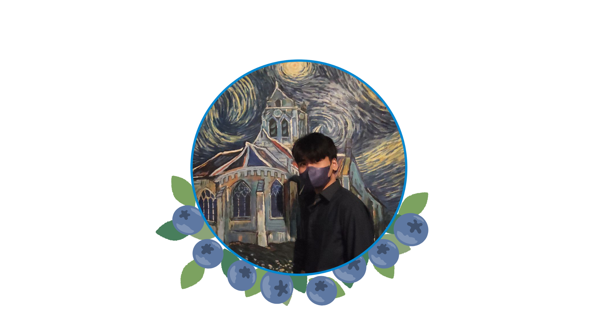

Berris
My name is Jonathan C. Berris, an IT student excited to innovate and create new things. My first computer wasn't the best,
so I had to find different ways to optimize my system so I can play the video games I want. From manipulating game files, to
troubleshooting BSODs for endless amount of hours, I found joy in the tediousness of the trials and errors that comes with being
an IT professional.
With my newfound joy, I am prepared to learn for the rest of my life and enhance my skills.
I am excited to utilize the skills that I will hone to help other people in need of help from an IT professional.
